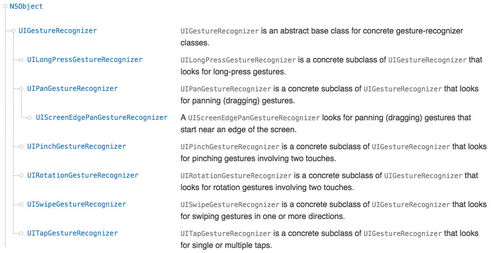
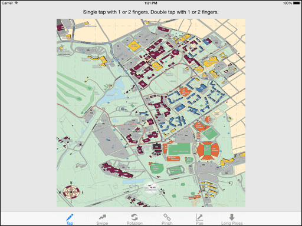
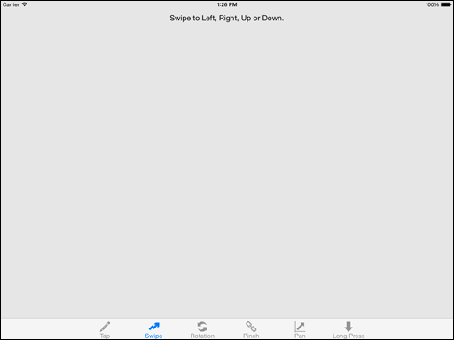
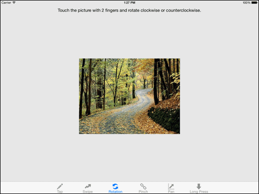
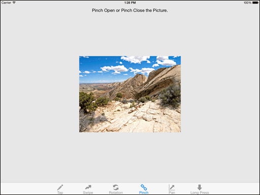
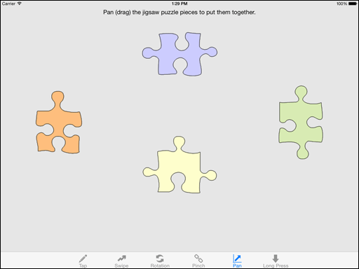
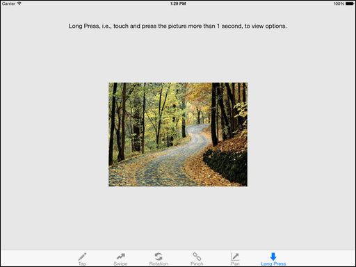
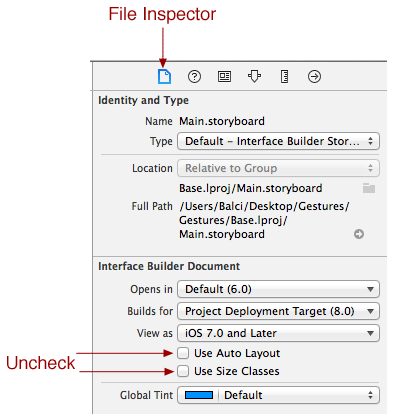
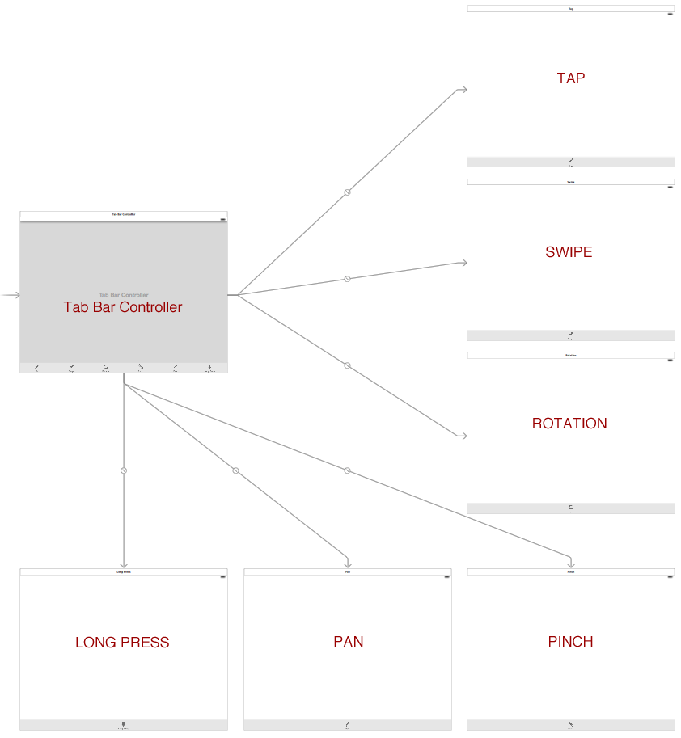

Learning Objectives
Table of Contents
Step 1: Application Functionality Specification
The iOS devices have popularized the multi-touch technology. In this tutorial, you will learn how to detect six different types of user gestures and take some actions. Basically, you will learn how to use the six concrete subclasses shown below, all inheriting from the abstract class UIGestureRecognizer. [UIKit Framework Reference]

- Abstract Class is a class that is defined only for the purpose of other classes to inherit from. You are not permitted to instantiate an object from an Abstract class.
- Concrete Class is a class from which an object can be instantiated.
This tutorial presents a tab bar-based iPad app, where each tab separately illustrates how to detect and process each type of user gesture.
| Tap Gesture Detection and Processing. | Swipe Gesture Detection and Processing. |
|  |  |
| Rotation Gesture Detection and Processing. | Pinch Gesture Detection and Processing. |
|  |  |
| Pan (Drag) Gesture Detection and Processing. | Long Press Gesture Detection and Processing. |
|  |  |
Step 2: Creation of a New Project
- Launch Xcode. Create a new project by selecting File → New → Project...
- Select iOS → Application → Tabbed Application template. Click Next.
- In the Choose options for your new project dialog,
- Enter Product Name as Gestures.
- Enter Your Name as Organization Name.
- The string com.yourname.Gestures becomes the Bundle ID for your application uniquely identifying it in the App Store for distribution.
- Select Swift as the programming language to use.
- Select iPad for the Devices.
- Click Next. In the File Browser window displayed,
- Select a location on your hard disk to store your project.
- Uncheck Source Control to disable version control. Click Create to create your project.
General Project Settings
- Click the project name Gestures in the project navigator to display the General project settings.
- Click the Team pop-up menu and select your iOS Developer Program account name from the list displayed.
- Select only Landscape Left and Landscape Right for Device Orientation.
Cleaning Up
The Tabbed Application template creates two View Controllers and four images. We need to delete these resources since we want to create our own.
- In Xcode Project Navigator, in the group called Gestures: Select the FirstViewController and SecondViewController Swift files, and press the Delete key to delete them. Select Move to Trash in the dialog box.
- Click Images.xcassets → Select first and second and then press the Delete key to delete them.
Copying Files into Your Project
- Download the Gestures_files.zip file.
- Uncompress it.
- Click Images.xcassets in the project navigator to display the Image Assets Pane.
- Drag and drop the following into the Image Assets Pane:
- App Icons
- Images
- Launch Image
- Tab Bar Icons
Setting the App Icons
- Click AppIcon in the Image Assets Pane.
- Select iOS 7.0 and Later Sizes for iPad under the Attributes Inspector.
- Click the Media Library icon in the Library Selector Bar to show all of the image assets for the project.
- Drag and drop an app icon to its corresponding placeholder in the AppIcon assets area.
Setting the Launch Image
- Click LaunchScreen.xib in the project navigator to display its content.
- Click the View (UIView) object to select it in the Document Outline.
- Bring up the Attributes Inspector and
- select iPad Full Screen from the Size pop-up menu
- select Landscape from the Orientation menu
- Select the title and copyright labels and press the Delete key to delete them.
- Show the Object Library. Drag an Image View (UIImageView) object from the Object Library and drop it on the canvas.
- Under the Size Inspector, make sure that it has: x=0, y=0, w=1,024, height=768
- Click the Image View object to select it.
- Under the Attributes Inspector:
- Select LaunchImage2048x1536 from the Image pull-down menu as the launch image to show.
Step 3: MVC Design Pattern: View – User Interface Development using the Storyboard
Clean Up
- Click the Main.storyboard file to display its content.
- Click the title bar of the First View to select it and press the Delete key to delete it.
- Click the title bar of the Second View to select it and press the Delete key to delete it
Set Scene Size and Orientation
We want to build our user interface only for the iPad Landscape orientation.
- Click the Main.storyboard file to display its content.
- Click the title bar of the Tab Bar Controller scene to select it.
- Bring up the Attributes Inspector and
- select iPad Full Screen from the Size pop-up menu
- select Landscape from the Orientation menu
- Save the file.
Disable Auto Layout
While the storyboard is showing, bring up the File Inspector and uncheck Use Auto Layout and Use Size Classes as shown below.

Creation of Scenes
- Click the Main.storyboard file to display its content. Zoom to 25%.
- Drag and drop a View Controller object.
- Click Tab Bar Controller to select it, and control-drag from it to the newly created View Controller object, release the mouse button, and select view controllers under Relationship Segue from the pop-up menu.
- Zoom to 100%. Click the Tab Bar of the newly created View Controller to select it. Show the Attributes Inspector, enter its Bar Item Title as Tap and select tabBarItemTap from the Image pull-down menu.
- Repeat the above steps for the following:
- Swipe → tabBarItemSwipe
- Rotation → tabBarItemRotation
- Pinch → tabBarItemPinch
- Pan → tabBarItemPan
- Long Press → tabBarItemLongPress
- You should have the storyboard as shown in the following screenshot.

Step 4: Creation of Six View Controller Classes
Create the Classes for the View Controller Objects under the Tab Bar Controller
- Right click the Gestures Group name and select New File... from the pop-up menu.
- Select iOS → Source → Cocoa Touch Class. Click Next.
- Select UIViewController from the "Subclass of" menu.
- Enter TapViewController as the class name. Click Next.
- Click Create to create the class file.
- Move the created file just below AppDelegate.swift.
Repeat the four steps above also for SwipeViewController, RotationViewController, PinchViewController, PanViewController, and LongPressViewController.
Set the Class Memberships of the View Controller Objects under the Tab Bar Controller
Set the Tab Bar Controller object's View Controller objects' classes to the ones created above.
- Click the Main.storyboard file to show its content.
- Click the title bar of the View Controller - Tap scene to select it.
- Show the Identity Inspector
- Select TapViewController from the Class pull-down menu.
Repeat the three steps above for each of the following class names:
- View Controller - Swipe → SwipeViewController
- View Controller - Rotation → RotationViewController
- View Controller - Pinch → PinchViewController
- View Controller - Pan → PanViewController
- View Controller - Long Press→ LongPressViewController
Build and run to observe the tab bar-based app functionality. Always follow the Incremental Development Approach. Build an increment and test it. Build the next increment and test it. And so on.
Step 5: Tap View Controller Development
User Interface Development
TBD << Insert the screen image here so that what UI to build is clear >>
- Click the Main.storyboard file to show its content. Zoom to 100%.
- Click inside the scene Tap to select its View object. Or select it in the Document Outline.
- Show the Attributes inspector and
- set the Background color to the gray crayon called Mercury.
- Show the Object Library.
- Drag a Label object from the library and drop it on the View. While the Label object is selected,
- Show the Attributes inspector
- Set its Alignment to Center.
- Set its text to: "Single tap with 1 or 2 fingers. Double tap with 1 or 2 fingers." without the quotes. Hit the Return key for the new text to be recorded.
- Show the Size inspector
- Set its position and size to: x=192, y=30, w=640, h=21.
- Drag a Scroll View object from the library and drop it on the View. While the Scroll View object is selected,
- Show the Size inspector
- Set its position and size to: x=192, y=64, w=640, h=640.
- Show the Attributes inspector
- Check all Touch options:
- Bounces Zoom
- Delays Content Touches
- Cancellable Content Touches
- Check both Interaction options:
- User Interaction Enabled
- Multiple Touch
- Designate TapViewController as the delegate object for the UIScrollViewDelegate protocol.
- Select the Scroll View object, control-drag from it to the Tap View Controller object in the scene dock, let go the mouse button, and select delegate from the pop-up menu.
- Drag an Image View object from the library and drop it on top of the Scroll View object so that the Scroll View object contains it. While the Image View object is selected,
- Show the Size inspector
- Set its position and size to: x=0, y=0, w=640, h=640.
- Show the Attributes inspector
- select vtCampusMap from the Image pull-down menu
- set the Mode to Scale to Fill.
- Check both Interaction options:
- User Interaction Enabled
- Multiple Touch
- Create Outlets for the UI objects
- Show the Assistant Editor and display the TapViewController.swift file.
- Show the Document Outline.
- Click the Label object in the document outline and control-drag from it to the location in the TapViewController.swift file. Let go the mouse button and enter messageBox as the name of the outlet. Click Connect to create and connect the outlet.
- Click the Scroll View object in the document outline and control-drag from it to the location in the TapViewController.swift file. Let go the mouse button and enter imageScrollView as the name of the outlet. Click Connect to create and connect the outlet.
- Click the Image View object in the document outline and control-drag from it to the location in the TapViewController.swift file. Let go the mouse button and enter imageView as the name of the outlet. Click Connect to create and connect the outlet.
Class Development
Copy and paste the documented code given below. Carefully study the code, understand what it is doing, and learn from it!
Step 6: Swipe View Controller DevelopmentTapViewController.swift file:
//
// TapViewController.swift
// Gestures
//
// Created by Osman Balci on 10/3/14.
// Copyright (c) 2014 Osman Balci. All rights reserved.
//
import UIKit
class TapViewController: UIViewController, UIScrollViewDelegate {
@IBOutlet var messageBox: UILabel!
@IBOutlet var imageScrollView: UIScrollView!
@IBOutlet var imageView: UIImageView!
let zoomStep = 1.5
override func viewDidLoad() {
super.viewDidLoad()
/***************************************************************************************
* A Tap is a discrete gesture, which sends only one action message when it occurs. *
**************************************************************************************/
// Instantiate a Tap Gesture Recognizer object for the current View.
// Identify which method to invoke for which type of Tap gesture.
var singleTap = UITapGestureRecognizer(target: self, action: "handleSingleTap:")
var doubleTap = UITapGestureRecognizer(target: self, action: "handleDoubleTap:")
var twoFingerTap = UITapGestureRecognizer(target: self, action: "handleTwoFingerTap:")
var twoFingerDoubleTap = UITapGestureRecognizer(target: self, action: "handleTwoFingerDoubleTap:")
// Set number of taps and touches required
singleTap.numberOfTapsRequired = 1
doubleTap.numberOfTapsRequired = 2
twoFingerTap.numberOfTouchesRequired = 2
twoFingerDoubleTap.numberOfTapsRequired = 2
twoFingerDoubleTap.numberOfTouchesRequired = 2
// Add Tap Gesture Recognizers to the imageView
imageView.addGestureRecognizer(singleTap)
imageView.addGestureRecognizer(doubleTap)
imageView.addGestureRecognizer(twoFingerTap)
imageView.addGestureRecognizer(twoFingerDoubleTap)
/*** Calculate minimum scale to perfectly fit the actual image width ***
UIView object's BOUNDS is defined as a rectangle with (x, y) and size (width, height) relative to its own coordinate system (0,0).
UIView object's FRAME is defined as a rectangle with (x, y) and size (width, height) relative to the superview it is contained within.
*/
var imageScrollViewBoundsSize = imageScrollView.bounds.size
var imageViewBoundsSize = imageView.bounds.size
var xScale = imageScrollViewBoundsSize.width / imageViewBoundsSize.width
var yScale = imageScrollViewBoundsSize.height / imageViewBoundsSize.height
var minimumZoomScaleToUse = min(xScale, yScale)
// Set the minimum zoom scale factor that can be applied to the scroll view's content.
imageScrollView.minimumZoomScale = minimumZoomScaleToUse
// Set the current zoom scale factor applied to the scroll view's content.
// This value determines how much the content is currently scaled. The default value is 1.0.
imageScrollView.zoomScale = minimumZoomScaleToUse
// Set the maximum zoom scale factor that can be applied to the scroll view's content
imageScrollView.maximumZoomScale = 3.0
}
/*
--------------------------------------------
MARK: - UIScrollViewDelegate Protocol Method
--------------------------------------------
*/
// Asks the delegate for the view to scale when zooming is about to occur in the scroll view
func viewForZoomingInScrollView(scrollView: UIScrollView) -> UIView? {
return imageView
}
/*
----------------------------
MARK: - Tap Handling Methods
----------------------------
*/
// This method is invoked when single tap gesture is applied
func handleSingleTap(gestureRecognizer: UIGestureRecognizer) {
var tapLocation: CGPoint = gestureRecognizer.locationInView(gestureRecognizer.view)
messageBox.text = "You single tapped with one finger at location x = \(tapLocation.x) y = \(tapLocation.y)"
}
// This method is invoked when double tap gesture is applied
func handleDoubleTap(gestureRecognizer: UIGestureRecognizer) {
self.messageBox.text = "You double tapped with one finger to zoom in"
// zoomScale = A floating-point value that specifies the current scale factor applied to the scroll view's content.
// The zoomScale default value is 1.0.
let newScaleInDouble: Double = Double(imageScrollView.zoomScale) * zoomStep
let newScale: CGFloat = CGFloat(newScaleInDouble)
var tapLocation: CGPoint = gestureRecognizer.locationInView(gestureRecognizer.view)
// Compute the rectangle defining an area of the content view based on zoom scale with tap location being the center
var zoomRect: CGRect = zoomRectForScale(newScale, withCenter:tapLocation)
/*
zoomRect = a rectangle defining an area of the content view
animated --> YES if the scrolling should be animated, NO if it should be immediate
*/
imageScrollView.zoomToRect(zoomRect, animated:true)
}
// This method is invoked when two finger tap gesture is applied
func handleTwoFingerTap(gestureRecognizer: UIGestureRecognizer) {
messageBox.text = "You single tapped with two fingers to zoom out"
// zoomScale = A floating-point value that specifies the current scale factor applied to the scroll view's content.
// The zoomScale default value is 1.0.
let newScaleInDouble: Double = Double(imageScrollView.zoomScale) / zoomStep
let newScale: CGFloat = CGFloat(newScaleInDouble)
var tapLocation: CGPoint = gestureRecognizer.locationInView(gestureRecognizer.view)
// Compute the rectangle defining an area of the content view based on zoom scale with tap location being the center
var zoomRect: CGRect = zoomRectForScale(newScale, withCenter:tapLocation)
/*
zoomRect = a rectangle defining an area of the content view
animated --> YES if the scrolling should be animated, NO if it should be immediate
*/
imageScrollView.zoomToRect(zoomRect, animated:true)
}
// This method is invoked when two finger double tap gesture is applied
func handleTwoFingerDoubleTap(gestureRecognizer: UIGestureRecognizer) {
messageBox.text = "You double tapped with two fingers"
}
/*
----------------------
MARK: - Utility Method
----------------------
*/
//
func zoomRectForScale(scale: CGFloat, withCenter center: CGPoint) -> CGRect {
var zoomRect: CGRect = CGRect(x: 0, y: 0, width: 0, height: 0)
// The zoom rect is in the content view's coordinates.
// At a zoom scale of 1.0, it would be the size of the imageScrollView's bounds.
// As the zoom scale decreases, so more content is visible, the size of the rect grows.
zoomRect.size.height = imageScrollView.frame.size.height / scale
zoomRect.size.width = imageScrollView.frame.size.width / scale
// Choose an origin so as to get the right center.
zoomRect.origin.x = center.x - (zoomRect.size.width / 2.0)
zoomRect.origin.y = center.y - (zoomRect.size.height / 2.0)
return zoomRect
}
}
Build and run to test the functionality of the Tap view gestures. Always follow the Incremental Development Approach. Build an increment and test it. Build the next increment and test it. And so on.
User Interface Development
- Click the Main.storyboard file to show its content. Zoom to 100%.
- Click inside the scene Swipe to select its View object. Or select it in the Document Outline.
- Show the Attributes inspector and
- set the Background color to the gray crayon called Mercury.
- Show the Object Library.
- Drag a Label object from the library and drop it on the View. While the Label object is selected,
- Show the Attributes inspector
- Set its Alignment to Center.
- Set its text to: "Swipe to Left, Right, Up or Down." without the quotes. Hit the Return key for the new text to be recorded.
- Show the Size inspector
- Set its position and size to: x=192, y=30, w=640, h=21.
- Obtain an object reference to the Label object
- Show the Assistant Editor and display the SwipeViewController.swift file.
- Show the Document Outline.
- Click the Label object in the document outline and control-drag from it to the location in the TapViewController.swift file. Let go the mouse button and enter messageBox as the name of the outlet. Click Connect to create and connect the outlet.
Class Development
Copy and paste the documented code given below. Carefully study the code, understand what it is doing, and learn from it!
SwipeViewController.swift file:
//
// SwipeViewController.swift
// Gestures
//
// Created by Osman Balci on 10/3/14.
// Copyright (c) 2014 Osman Balci. All rights reserved.
//
import UIKit
class SwipeViewController: UIViewController {
@IBOutlet var messageBox: UILabel!
// Instantiate and initialize an Image View object to be used in the animation of the swipe gesture
var imageView = UIImageView(frame: CGRectMake(0.0, 0.0, 40.0, 40.0))
// Specify the location where the animation will Begin
var animationStartLocation = CGPointMake(0.0, 0.0)
// Specify the location where the animation will End
var animationEndLocation: CGPoint = CGPointMake(0.0, 0.0)
let animationDistance: CGFloat = 500.0 // Points in x or y direction
override func viewDidLoad() {
super.viewDidLoad()
/***************************************************************************************
* A Swipe is a discrete gesture, which sends only one action message when it occurs. *
***************************************************************************************/
/*
---------------------
MARK: - Swipe to LEFT
---------------------
*/
// Create a Swipe Left Gesture Recognizer object and
// Identify which method to invoke when the Swipe Left gesture occurs.
var swipeLeftRecognizer = UISwipeGestureRecognizer(target: self, action: "performAnimation:")
/*-----------------------------------------------------------------------------------------
The : after performAnimation above implies that the performAnimation method has one
parameter, which will contain the object reference of the object invoking the method.
In this case, the UISwipeGestureRecognizer's object reference (unique ID) will be passed
as the parameter value. We will use this obj ref to communicate with the recognizer.
-----------------------------------------------------------------------------------------*/
// Set the Swipe Gesture Recognizer Direction to Left
swipeLeftRecognizer.direction = UISwipeGestureRecognizerDirection.Left
// Add Swipe Left Gesture Recognizer to the View
self.view.addGestureRecognizer(swipeLeftRecognizer)
/*
----------------------
MARK: - Swipe to RIGHT
----------------------
*/
// Create a Swipe Right Gesture Recognizer object and
// Identify which method to invoke when the Swipe Right gesture occurs.
var swipeRightRecognizer = UISwipeGestureRecognizer(target: self, action: "performAnimation:")
// Set the Swipe Gesture Recognizer Direction to Right
swipeRightRecognizer.direction = UISwipeGestureRecognizerDirection.Right
// Add Swipe Right Gesture Recognizer to the View
self.view.addGestureRecognizer(swipeRightRecognizer)
/*
----------------
MARK: - Swipe UP
----------------
*/
// Create a Swipe Up Gesture Recognizer object and
// Identify which method to invoke when the Swipe Up gesture occurs.
var swipeUpRecognizer = UISwipeGestureRecognizer(target: self, action: "performAnimation:")
// Set the Swipe Gesture Recognizer Direction to Up
swipeUpRecognizer.direction = UISwipeGestureRecognizerDirection.Up
// Add Swipe Up Gesture Recognizer to the View
self.view.addGestureRecognizer(swipeUpRecognizer)
/*
---------------------
MARK: - Swipe to DOWN
---------------------
*/
// Create a Swipe Down Gesture Recognizer object and
// Identify which method to invoke when the Swipe Down gesture occurs.
var swipeDownRecognizer = UISwipeGestureRecognizer(target: self, action: "performAnimation:")
// Set the Swipe Gesture Recognizer Direction to Down
swipeDownRecognizer.direction = UISwipeGestureRecognizerDirection.Down
// Add Swipe Down Gesture Recognizer to the View
self.view.addGestureRecognizer(swipeDownRecognizer)
//-----------------------------------------------------------------------------
// Set content mode of the imageView and add imageView as a subview of the View
//-----------------------------------------------------------------------------
// Set the content mode of the image view to be used in the animation
imageView.contentMode = UIViewContentMode.Center
self.view.addSubview(imageView)
}
/*
--------------------------------------
MARK: - Animation of the Swipe Gesture
--------------------------------------
We animate the fading out of an image in the direction of swipe to show the user the
action of swiping. We start the animation at the location where the swipe starts.
- At the start of the animation, the image will be entirely visible.
- At the end of the animation, the image will be entirely invisible (fades out).
*/
func performAnimation(recognizer: UISwipeGestureRecognizer) {
// Set the swipe start location to be the animation start location
animationStartLocation = recognizer.locationInView(self.view)
switch recognizer.direction {
case UISwipeGestureRecognizerDirection.Left:
messageBox.text = "You swiped to LEFT"
imageView.image = UIImage(named: "football.png")
animationEndLocation.y = animationStartLocation.y
animationEndLocation.x = animationStartLocation.x - animationDistance
case UISwipeGestureRecognizerDirection.Right:
messageBox.text = "You swiped to RIGHT"
imageView.image = UIImage(named: "soccerball.png")
animationEndLocation.y = animationStartLocation.y
animationEndLocation.x = animationStartLocation.x + animationDistance
case UISwipeGestureRecognizerDirection.Up:
messageBox.text = "You swiped to UP"
imageView.image = UIImage(named: "tennisball.png")
animationEndLocation.x = animationStartLocation.x
animationEndLocation.y = animationStartLocation.y - animationDistance
case UISwipeGestureRecognizerDirection.Down:
messageBox.text = "You swiped to DOWN"
imageView.image = UIImage(named: "basketball.png")
animationEndLocation.x = animationStartLocation.x
animationEndLocation.y = animationStartLocation.y + animationDistance
default:
return
}
// Set the image view center to the animation start location
imageView.center = animationStartLocation
// Make the image entirely visible at the start of animation
imageView.alpha = 1.0
// Marks the beginning of a begin/commit animation block
UIView.beginAnimations("", context: nil)
// Sets the duration (in seconds) of the animation in the animation block
UIView.setAnimationDuration(1.50)
// Set the image view center to the animation end location
imageView.center = animationEndLocation
// Make the image entirely invisible (fade out) at the end of the animation
imageView.alpha = 0.0
// Marks the end of a begin/commit animation block and schedules the animations for execution.
UIView.commitAnimations()
}
}
Build and run to test the functionality of the Swipe view gestures. Always follow the Incremental Development Approach. Build an increment and test it. Build the next increment and test it. And so on.
Step 7: Rotation View Controller Development
User Interface Development
- Click the Main.storyboard file to show its content. Zoom to 100%.
- Click inside the scene Rotation to select its View object. Or select it in the Document Outline.
- Show the Attributes inspector and
- set the Background color to the gray crayon called Mercury.
- Show the Object Library.
- Drag a Label object from the library and drop it on the View. While the Label object is selected,
- Show the Attributes inspector
- Set its text Alignment to Center.
- Set its text to: "Touch the picture with 2 fingers and rotate clockwise or counterclockwise" without the quotes. Hit the Return key for the new text to be recorded.
- Show the Size inspector
- Set its position and size to: x=112, y=30, w=800, h=21.
- Drag an Image View object from the library and drop it on the View. While the Image View object is selected,
- Show the Size inspector
- Set its position and size to: x=312, y=231, w=400, h=300.
- Show the Attributes inspector
- Select autumn from the Image pull-down menu
- Set its Mode to Center
- Check both Interaction options:
- User Interaction Enabled
- Multiple Touch
- Obtain object references to the UI objects
- Show the Assistant Editor and display the RotationViewController.swift file.
- Click the Label object in the UI structure pane or in the View and control-drag from it to the location in the RotationViewController.swift file. Let go the mouse button and enter messageBox as the name of the outlet. Click Connect to create and connect the outlet.
- Click the Image View object in the structure shown and control-drag from it to the location in the RotationViewController.swift file. Let go the mouse button and enter imageView as the name of the outlet. Click Connect to create and connect the outlet.
Class Development
Copy and paste the documented code given below. Carefully study the code, understand what it is doing, and learn from it!
RotationViewController.swift file:
//
// RotationViewController.swift
// Gestures
//
// Created by Osman Balci on 10/3/14.
// Copyright (c) 2014 Osman Balci. All rights reserved.
//
import UIKit
class RotationViewController: UIViewController {
@IBOutlet var messageBox: UILabel!
@IBOutlet var imageView: UIImageView!
// Define Pi with its symbol
let π = 3.14159
override func viewDidLoad() {
super.viewDidLoad()
/*************************************************************************************************
* A Rotation is a continuous gesture, which *
* (a) begins when two fingers (touches) move enough distance to be considered a rotation, and *
* (b) ends when both fingers are lifted. *
* *
* The gesture recognizer sends its action message at each stage of movements of the fingers. *
*************************************************************************************************/
// Instantiate a Rotation Gesture Recognizer object for the current View.
// Identify which method to invoke when the Rotation gesture is applied.
var rotationRecognizer = UIRotationGestureRecognizer(target: self, action: "handleRotation:")
// Add Rotation Gesture Recognizer to the View
self.view.addGestureRecognizer(rotationRecognizer)
}
/*
-------------------------------
MARK: - Handle Rotation Gesture
-------------------------------
*/
// This method is invoked when rotation gesture is applied
func handleRotation(recognizer: UIRotationGestureRecognizer) {
/*
recognizer.rotation = rotation of the gesture in radians since its last change.
recognizer.velocity = velocity of the rotation gesture in radians per second.
Positive velocity values indicate Clockwise rotation.
Negative velocity values indicate Counterclockwise rotation.
Degrees are most commonly used and better understood by the users. Therefore,
we convert radians to degrees using this formula: Degrees = Radians x 180 / π
*/
var rotationInDegrees = Double((recognizer.rotation)) * 180.0 / π
var velocityInDegrees = Double((recognizer.velocity)) * 180.0 / π
messageBox.text = "You rotated \(rotationInDegrees) degrees with velocity \(velocityInDegrees) degrees per second."
/*
CGAffineTransform = A structure for holding an affine transformation matrix.
CGAffineTransformMakeRotation = Returns an affine transformation matrix constructed from a rotation value given.
Affine transformation is the one for which parallel lines remain parallel.
*/
var transformationMatrix = CGAffineTransformMakeRotation(recognizer.rotation)
imageView.transform = transformationMatrix
}
}
Build and run to test the functionality of the Rotation view gesture. Always follow the Incremental Development Approach. Build an increment and test it. Build the next increment and test it. And so on.
Step 8: Pinch View Controller Development
User Interface Development
- Click the Main.storyboard file to show its content. Zoom to 100%.
- Click inside the scene Pinch to select its View object. Or select it in the Document Outline.
- Show the Attributes inspector and
- set the Background color to the gray crayon called Mercury.
- Show the Object Library.
- Drag a Label object from the library and drop it on the View. While the Label object is selected,
- Show the Attributes inspector
- Set its text Alignment to Center.
- Set its text to: "Pinch Open or Pinch Close the Picture." without the quotes. Hit the Return key for the new text to be recorded.
- Show the Size inspector
- Set its position and size to: x=112, y=30, w=800, h=21.
- Drag an Image View object from the library and drop it on the View. While the Image View object is selected,
- Show the Size inspector
- Set its position and size to: x=312, y=221, w=400, h=300.
- Show the Attributes inspector
- Select scene from the Image pull-down menu
- Set its Mode to "Scale to Fill"
- Check both Interaction options:
- User Interaction Enabled
- Multiple Touch
- Obtain object references to the UI objects
- Show the Assistant Editor and display the PinchViewController.swift file.
- Click the Label object in the UI structure pane or in the View and control-drag from it to the location in the PinchViewController.swift file. Let go the mouse button and enter messageBox as the name of the outlet. Click Connect to create and connect the outlet.
- Click the Image View object in the structure shown and control-drag from it to the location in the PinchViewController.swift file. Let go the mouse button and enter imageView as the name of the outlet. Click Connect to create and connect the outlet.
Class Development
Copy and paste the documented code given below. Carefully study the code, understand what it is doing, and learn from it!
PinchViewController.swift file:
//
// PinchViewController.swift
// Gestures
//
// Created by Osman Balci on 10/3/14.
// Copyright (c) 2014 Osman Balci. All rights reserved.
//
import UIKit
class PinchViewController: UIViewController {
@IBOutlet var messageBox: UILabel!
@IBOutlet var imageView: UIImageView!
var lastScaleFactor = 1.0
override func viewDidLoad() {
super.viewDidLoad()
/**************************************************************************************************
* A Pinch is a continuous gesture, which *
* *
* (a) begins when two fingers (touches) move toward each other (zoom-out) or *
* move away from each other (zoom-in), and *
* (b) ends when both fingers are lifted. *
* *
* A Pinch has the following 3 states: *
* *
* UIGestureRecognizerStateBegan UIGestureRecognizerStateEnded *
* | | *
* | UIGestureRecognizerStateChanged | *
* V V *
* time -------------------------------------------------------------------------------------- *
* touch begins touch ends *
*************************************************************************************************/
// Instantiate a Pinch Gesture Recognizer object for the current View.
// Identify which method to invoke when the Pinch gesture is applied.
var pinchRecognizer = UIPinchGestureRecognizer(target: self, action: "handlePinch:")
// Add Pinch Gesture Recognizer to the Image View
imageView.addGestureRecognizer(pinchRecognizer)
}
/*
----------------------------
MARK: - Handle Pinch Gesture
----------------------------
*/
// This method is invoked when rotation gesture is applied
func handlePinch(recognizer: UIPinchGestureRecognizer) {
/*
recognizer.scale = The scale factor that is proportional to change in distance between your fingers.
D1 = distance between two fingers at the start of pinch
D2 = distance between two fingers at the end of pinch
recognizer.scale = D2/D1
recognizer.scale = D2/D1 < 1.0 implies Pinch Close (moving two fingers close to each other)
recognizer.scale = D2/D1 > 1.0 implies Pinch Open (moving two fingers away from each other)
recognizer.velocity = The velocity of the pinch as scale factor per second.
*/
var scaleFactor = Double(recognizer.scale)
var message = ""
if scaleFactor < 1.0 { // Pinch Close
message = "You pinched Close \(scaleFactor*100)% with velocity \(recognizer.velocity) scale factor per second."
recognizer.view?.transform = CGAffineTransformMakeScale(CGFloat(lastScaleFactor * scaleFactor), CGFloat(lastScaleFactor * scaleFactor))
} else { // Pinch Open
message = "You pinched Open \(scaleFactor*100)% with velocity \(recognizer.velocity) scale factor per second."
recognizer.view?.transform = CGAffineTransformMakeScale(CGFloat(lastScaleFactor + (scaleFactor-1)), CGFloat(lastScaleFactor + (scaleFactor-1)))
}
if (recognizer.state == UIGestureRecognizerState.Ended) {
if (scaleFactor > 1.0) {
lastScaleFactor += scaleFactor - 1
} else {
lastScaleFactor *= scaleFactor
}
}
messageBox.text = message
}
}
Build and run to test the functionality of the Pinch view gestures. Always follow the Incremental Development Approach. Build an increment and test it. Build the next increment and test it. And so on.
Step 9: Pan View Controller Development
User Interface Development
- Click the Main.storyboard file to show its content. Zoom to 100%.
- Click inside the scene Pan to select its View object. Or select it in the Document Outline.
- Show the Attributes inspector and
- set the Background color to the gray crayon called Mercury.
- Show the Object Library.
- Drag a Label object from the library and drop it on the View. While the Label object is selected,
- Show the Attributes inspector
- Set its text Alignment to Center.
- Set its text to: "Pan (drag) the jigsaw puzzle pieces to put them together." without the quotes. Hit the Return key for the new text to be recorded.
- Show the Size inspector
- Set its position and size to: x=192, y=24, w=640, h=21.
- Drag an Image View object from the library and drop it on the View, one at a time, four times.
- Show the Size inspector.
- Set their positions and sizes to:
- x=405, y=92, w=215, h=126 (puzzlePiece1)
- x=102, y=260, w=132, h=179 (puzzlePiece2)
- x=795, y=244, w=126, h=211 (puzzlePiece3)
- x=407, y=389, w=211, h=163 (puzzlePiece4)
- Show the Attributes inspector
- Click an Image View object, select the corresponding image name shown above from the Image pull-down menu.
- Set its Mode to Center for each of the four puzzle pieces.
- Check both Interaction options for each of the four puzzle pieces.
- User Interaction Enabled
- Multiple Touch
- Obtain object references to the UI objects
- Show the Assistant Editor and display the PanViewController.h file.
- Click the Image View object on the top center and control-drag from it to the location in the PanViewController.swift file. Let go the mouse button and enter imageView1 as the name of the outlet. Click Connect to create and connect the outlet.
- Click the Image View object on the left and control-drag from it to the location in the PanViewController.swift file. Let go the mouse button and enter imageView2 as the name of the outlet. Click Connect to create and connect the outlet.
- Click the Image View object on the right and control-drag from it to the location in the PanViewController.swift file. Let go the mouse button and enter imageView3 as the name of the outlet. Click Connect to create and connect the outlet.
- Click the Image View object on the bottom center and control-drag from it to the location in the PanViewController.swift file. Let go the mouse button and enter imageView4 as the name of the outlet. Click Connect to create and connect the outlet.
Class Development
Copy and paste the documented code given below. Carefully study the code, understand what it is doing, and learn from it!
PanViewController.swift file:
//
// PanViewController.swift
// Gestures
//
// Created by Osman Balci on 10/3/14.
// Copyright (c) 2014 Osman Balci. All rights reserved.
//
import UIKit
class PanViewController: UIViewController {
@IBOutlet var imageView1: UIImageView!
@IBOutlet var imageView2: UIImageView!
@IBOutlet var imageView3: UIImageView!
@IBOutlet var imageView4: UIImageView!
/*
A geometric translation moves every point of our UIImageView object by the same amount
in a given direction when it is panned (dragged) from one location to another.
We store the (x, y) coordinates of the last translation of imageViewj into an
instance variable lastTranslationj, where j=1,2,3,4
CGPoint is a structure that contains the (x, y) coordinate values.
*/
var lastTranslation1 = CGPointMake(0.0, 0.0)
var lastTranslation2 = CGPointMake(0.0, 0.0)
var lastTranslation3 = CGPointMake(0.0, 0.0)
var lastTranslation4 = CGPointMake(0.0, 0.0)
override func viewDidLoad() {
super.viewDidLoad()
/**************************************************************************************************
* Panning (Dragging) is a continuous gesture, which *
* *
* (a) begins when the user starts panning while one or more fingers are pressed down, and *
* (b) ends when all fingers are lifted. *
* *
* Panning has the following 3 states: *
* *
* UIGestureRecognizerStateBegan UIGestureRecognizerStateEnded *
* | | *
* | UIGestureRecognizerStateChanged | *
* V V *
* time -------------------------------------------------------------------------------------- *
* touch begins touch ends *
*************************************************************************************************/
//------------------------------ Image View 1 --------------------------------------
// Create Panning (Dragging) Gesture Recognizer for Image View 1
var panRecognizer1 = UIPanGestureRecognizer(target: self, action: "handlePanning1:")
// Add Panning (Dragging) Gesture Recognizer to Image View 1
imageView1.addGestureRecognizer(panRecognizer1)
//------------------------------ Image View 2 --------------------------------------
// Create Panning (Dragging) Gesture Recognizer for Image View 2
var panRecognizer2 = UIPanGestureRecognizer(target: self, action: "handlePanning2:")
// Add Panning (Dragging) Gesture Recognizer to Image View 2
imageView2.addGestureRecognizer(panRecognizer2)
//------------------------------ Image View 3 --------------------------------------
// Create Panning (Dragging) Gesture Recognizer for Image View 3
var panRecognizer3 = UIPanGestureRecognizer(target: self, action: "handlePanning3:")
// Add Panning (Dragging) Gesture Recognizer to Image View 3
imageView3.addGestureRecognizer(panRecognizer3)
//------------------------------ Image View 4 --------------------------------------
// Create Panning (Dragging) Gesture Recognizer for Image View 4
var panRecognizer4 = UIPanGestureRecognizer(target: self, action: "handlePanning4:")
// Add Panning (Dragging) Gesture Recognizer to Image View 4
imageView4.addGestureRecognizer(panRecognizer4)
}
/*
-------------------------------------------
MARK: - Panning (Dragging) Handling Methods
-------------------------------------------
*/
/********************************************************
* Handle Panning (Dragging) Gesture for Image View 1 *
********************************************************/
func handlePanning1(recognizer: UIPanGestureRecognizer) {
var newTranslation: CGPoint = recognizer.translationInView(imageView1)
recognizer.view?.transform = CGAffineTransformMakeTranslation(lastTranslation1.x + newTranslation.x, lastTranslation1.y + newTranslation.y)
if recognizer.state == UIGestureRecognizerState.Ended {
lastTranslation1.x += newTranslation.x
lastTranslation1.y += newTranslation.y
}
}
/********************************************************
* Handle Panning (Dragging) Gesture for Image View 2 *
********************************************************/
func handlePanning2(recognizer: UIPanGestureRecognizer) {
var newTranslation: CGPoint = recognizer.translationInView(imageView2)
recognizer.view?.transform = CGAffineTransformMakeTranslation(lastTranslation2.x + newTranslation.x, lastTranslation2.y + newTranslation.y)
if recognizer.state == UIGestureRecognizerState.Ended {
lastTranslation2.x += newTranslation.x
lastTranslation2.y += newTranslation.y
}
}
/********************************************************
* Handle Panning (Dragging) Gesture for Image View 3 *
********************************************************/
func handlePanning3(recognizer: UIPanGestureRecognizer) {
var newTranslation: CGPoint = recognizer.translationInView(imageView3)
recognizer.view?.transform = CGAffineTransformMakeTranslation(lastTranslation3.x + newTranslation.x, lastTranslation3.y + newTranslation.y)
if recognizer.state == UIGestureRecognizerState.Ended {
lastTranslation3.x += newTranslation.x
lastTranslation3.y += newTranslation.y
}
}
/********************************************************
* Handle Panning (Dragging) Gesture for Image View 4 *
********************************************************/
func handlePanning4(recognizer: UIPanGestureRecognizer) {
var newTranslation: CGPoint = recognizer.translationInView(imageView4)
recognizer.view?.transform = CGAffineTransformMakeTranslation(lastTranslation4.x + newTranslation.x, lastTranslation4.y + newTranslation.y)
if recognizer.state == UIGestureRecognizerState.Ended {
lastTranslation4.x += newTranslation.x
lastTranslation4.y += newTranslation.y
}
}
}
Build and run to test the functionality of the Pan view gestures. Always follow the Incremental Development Approach. Build an increment and test it. Build the next increment and test it. And so on.
Step 10: Long Press View Controller Development
User Interface Development
- Click the Main.storyboard file to show its content. Zoom to 100%.
- Click inside the scene Long Press to select its View object. Or select it in the Document Outline.
- Show the Attributes inspector and
- set the Background color to the gray crayon called Mercury.
- Show the Object Library.
- Drag a Label object from the library and drop it on the View. While it is selected,
- Show the Attributes inspector
- Set its text Alignment to Center.
- Set its text to: "Long Press, i.e., touch and press the picture more than 1 second, to view options." without the quotes. Hit the Return key for the new text to be recorded.
- Show the Size inspector
- Set its position and size to: x=162, y=64, w=700, h=21.
- Drag an Image View object from the library and drop it on the View. While it is selected,
- Show the Size inspector
- Set its position and size to: x=312, y=237, w=400, h=300.
- Show the Attributes inspector
- Select autumn from the Image pull-down menu
- Set its Mode to Center
- Check both Interaction options:
- User Interaction Enabled
- Multiple Touch
- Obtain object references to the UI objects
- Show the Assistant Editor and display the LongPressViewController.swift file.
- Click the Label object in the View and control-drag from it to the location in the LongPressViewController.swift file. Let go the mouse button and enter messageBox as the name of the outlet. Click Connect to create and connect the outlet.
- Click the Image View object in the View and control-drag from it to the location in the LongPressViewController.swift file. Let go the mouse button and enter imageView as the name of the outlet. Click Connect to create and connect the outlet.
Class Development
Copy and paste the documented code given below. Carefully study the code, understand what it is doing, and learn from it!
LongPressViewController.swift file:
//
// LongPressViewController.swift
// Gestures
//
// Created by Osman Balci on 10/3/14.
// Copyright (c) 2014 Osman Balci. All rights reserved.
//
import UIKit
class LongPressViewController: UIViewController, UIActionSheetDelegate {
@IBOutlet var messageBox: UILabel!
@IBOutlet var imageView: UIImageView!
override func viewDidLoad() {
super.viewDidLoad()
/**************************************************************************************************
* Long Press is a continuous gesture, which *
* *
* (a) begins when the user presses down one or more fingers (numberOfTouchesRequired) *
* for more than a given number of seconds (minimumPressDuration) *
* within a maximum movement area (allowableMovement), and *
* (b) ends when all fingers are lifted. *
* *
* Long-press gesture has the following 3 states: *
* *
* UIGestureRecognizerStateBegan UIGestureRecognizerStateEnded *
* | | *
* | UIGestureRecognizerStateChanged | *
* V V *
* time -------------------------------------------------------------------------------------- *
* touch begins touch ends *
*************************************************************************************************/
// Create Long Press Gesture Recognizer for the Image View
var longPressRecognizer = UILongPressGestureRecognizer(target: self, action: "handleLongPress:")
// Number of fingers (touches) that must be pressed on the Image View for the gesture to be recognized.
longPressRecognizer.numberOfTouchesRequired = 1
// Minimum number of seconds fingers must press on the Image View for the gesture to be recognized.
longPressRecognizer.minimumPressDuration = 1
// Maximum movement (in pixels) of the fingers on the Image View before the gesture fails.
longPressRecognizer.allowableMovement = 15
// Add Long Press Gesture Recognizer to the Image View
imageView.addGestureRecognizer(longPressRecognizer)
}
/*
------------------------------------------
MARK: - Long Press Gesture Handling Method
------------------------------------------
*/
func handleLongPress(recognizer: UILongPressGestureRecognizer) {
// Display the action sheet only when the long-press gesture begins
if recognizer.state == UIGestureRecognizerState.Began {
var actionSheet = UIActionSheet()
actionSheet.title = "Available Actions"
// Set self to be the delegate for the UIActionSheetDelegate protocol
actionSheet.delegate = self
actionSheet.addButtonWithTitle("Email Picture") // buttonIndex = 0
actionSheet.addButtonWithTitle("Copy Picture") // buttonIndex = 1
actionSheet.addButtonWithTitle("Save Picture") // buttonIndex = 2
actionSheet.showInView(self.view)
}
}
/*
---------------------------------------------
MARK: - UIActionSheetDelegate Protocol Method
---------------------------------------------
*/
func actionSheet(actionSheet: UIActionSheet, clickedButtonAtIndex buttonIndex: Int) {
// The action sheet is automatically dismissed when this method is called
switch buttonIndex {
case 0:
messageBox.text = "You selected to Email the picture!"
case 1:
messageBox.text = "You selected to Copy the picture!"
case 2:
messageBox.text = "You selected to Save the picture!"
default:
return
}
}
}
Build and run to test the functionality of the Long Press view gestures. Always follow the Incremental Development Approach. Build an increment and test it. Build the next increment and test it. And so on.
Build and run to test the entire functionality of your app.